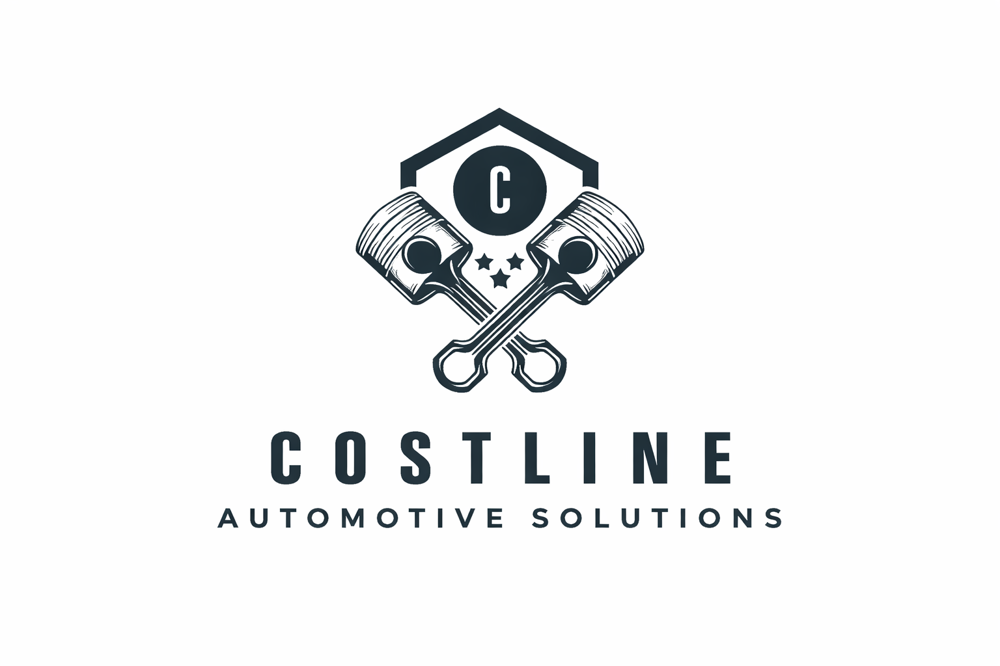

Mobile Mechanic | Sunshine Coast QLD
Coastline Automotive Solutions provides reliable, professional mobile mechanic services across the Sunshine Coast. We come to you — saving you time and hassle.
Use our online booking system below to schedule your service.
Prefer to call?
Call 0491 707 961⭐⭐⭐⭐⭐
"Fast, reliable and came straight to my house. Highly recommend Coastline Automotive Solutions!"
- Jake M.
⭐⭐⭐⭐⭐
"Saved me a lot of money with a pre-purchase inspection. Honest and professional service."
- Sarah T.
⭐⭐⭐⭐⭐
"Great communication and top quality work. Will definitely use again."
- Ben R.
See more reviews or leave your own:
Leave a Google ReviewEmail: coastlineautomotivesolutions@outlook.com.au
Phone: 0491 707 961
Service Area: Sunshine Coast, QLD